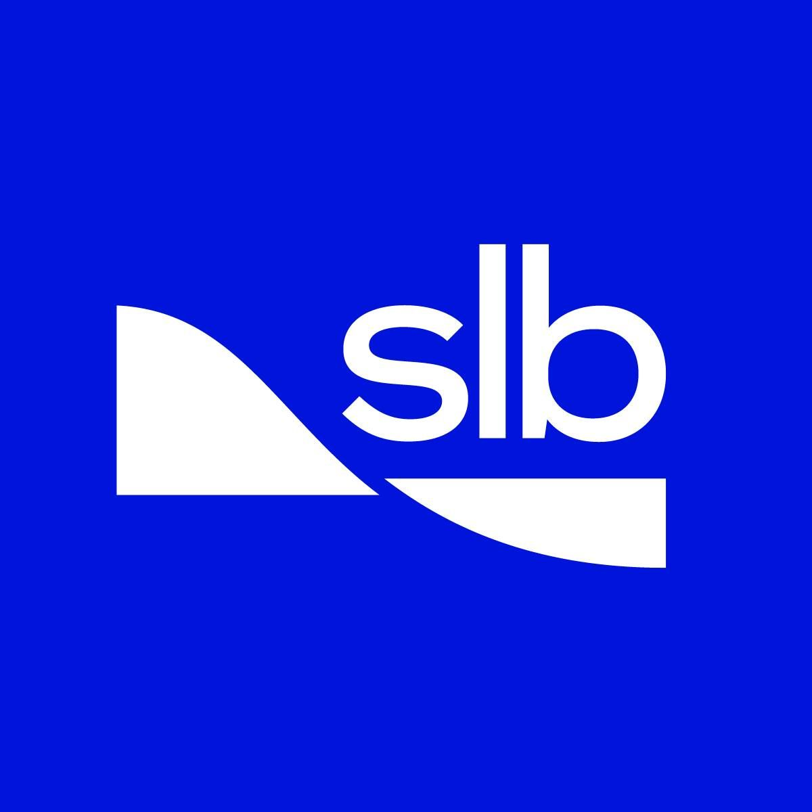
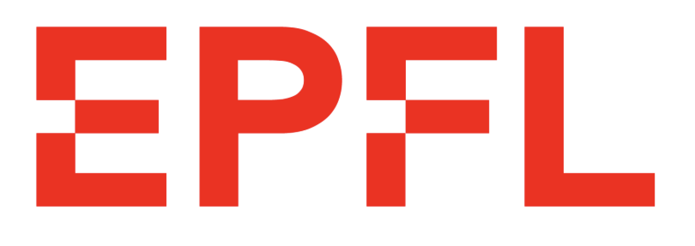

Experience
Massachusetts Institute of Technology
Machine Learning Research
Februrary 2026 - August 2026
Boston, USA
Graph Machine Learning Research - Modeling the US workforce by tasks and building Markov Chains evaluating how tasks can be automated with AI.

SLB
Machine Learning Research Intern
July 2025 - January 2026
Boston, USA
Part of the acoustics and complex systems team, I worked on SLB's flagship product Epilogue, offering services for evaluating well integrity.
- Integrated Vision Transformers (ViT) into the production training pipeline for sonic log analysis. Developed a highly modular architecture trained from scratch, making the model components modular. Implemented AutoKeras for automated hyperparameter optimization, streamlining model tuning and improving training efficiency.
- Developed methods to visualize and interpret how CNN models process sonic image data derived from slowness-time coherence wavelet transforms with GradCam++.

École Polytechnique Fédérale de Lausanne
Research Assistant - SwissAI Initiative
January 2025 - July 2025 | Lausanne, Switzerland
Part of the Post-Training Team for Apertus at the SwissAI Initiative.
- Initialized online reinforcement learning infrastructure and experiments using the VERL framework.
- Developed a novel curriculum learning algorithm on top using Reasoning-Gym, to improve RL training efficiency and stability. Scaled the implementation to 70B-parameter models using distributed Ray clusters, handling the computational complexity of large-scale online RL with systematic difficulty progression throughout training.
- Contributed to evaluations including QA and Math evaluations using VLLM inference engines.
Research Scholar - AI Lab
September 2023 - February 2025 | Lausanne, Switzerland
Recipient of the MSc Research Scholarship - Worked at the AI Lab, supervised by Prof. Boi Faltings.
- Conducted research with a focus on reasoning in LLMs including improving LLMs' capabilities at generating logically sound arguments with preference optimization.
- Co-authored two other papers: how LLMs can maintain epistemic consistency and a survey paper on Uncertainty in Causality.
Research Assistant - ML4ED
September 2022 - February 2023 | Lausanne, Switzerland
Conducted my Bachelor thesis at the Machine Learning for Education Lab (ML4ED), supervised by Prof. Tanja Käser.
- Built a data analysis pipeline, combining data mining and NLP, to analyse self-regulated learning behaviors in keystroke logs.